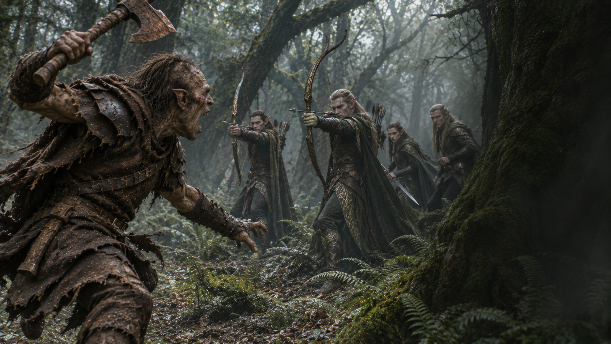

Fin de l’aventure · Échec
Une charge très courte
Un cri de guerre. Quatre très bonnes raisons de se taire.
Découvrir votre sortLa fin de la traque
Vous bondissez de votre cachette en levant votre hache. Les quatre Elfes se retournent. Vous n’avez pas le temps de terminer votre cri : une première flèche vous frappe, puis une autre.
Vous tombez parmi les fougères. La dernière chose que vous entendez est un soupir : « Les Orcs ne changeront donc jamais. »
La discrétion avait pourtant été proposée.